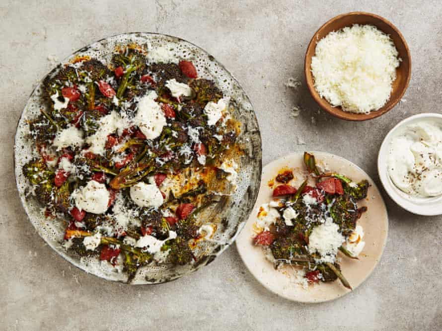

Broccolini with chorizo, manchego and caraway seed creme fraiche

Double the recipe for the creme fraiche, if you like: it’s lovely to have in the fridge to serve with raw vegetables, and it keeps for up to three days. Use purple sprouting or any broccoli you have to hand, though you may need to adjust the cooking time accordingly.
For the caraway creme fraiche
Heat the oven to its highest setting – 250C (230C fan)/gas 9-plus. In a small bowl, mix the tomato paste with the lemon juice, olive oil and half a teaspoon of salt. Put the chorizo and broccoli in a large oven tray lined with baking paper, pour over the tomato mixture and toss to coat.
Roast for eight minutes, turning the broccoli once halfway, so the chorizo oil coats the stems. Take out of the oven, heat the grill to high, then grill the broccoli mix for two minutes, until lightly charred, remove and set aside.
In a small bowl, mix all the creme fraiche ingredients with a teaspoon of salt.
To serve, arrange the broccoli, chorizo and any oil from the tray on a platter. Drizzle over a few spoons of the creme fraiche, sprinkle half the manchego over the top and serve with the remaining creme fraiche and manchego on the side.